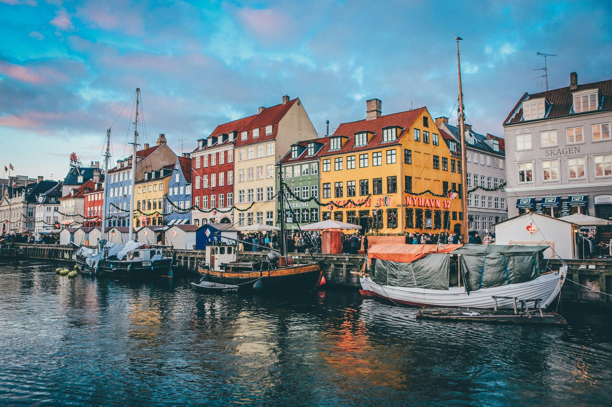

UNTIL DEPARTURE
일출 계산중 · 일몰 계산중
탐페레 현지 시간
--:--실시간 환율 ▼
국제 외환시장 데이터를 불러오는 중...
📊 실시간 지출 현황
클릭하여 전체 가계부 보기 ➔
최근 지출 내역
데이터 로딩 중...
🧳 출발 전 준비 및 바우처
📅 준비 로드맵
🚌 당일 공항 여정 & 수속
✈️ 항공편 바우처 (SAS)
✅ 한 달 살기 실전 패킹 리스트
· 1.1 ~ 1.3
🏙️ 헬싱키 2박 3일
📍 여행 개요
1.1 ~ 1.3 · 2박 3일새해 첫날 헬싱키 공항에 도착해 이틀 동안 시내 동쪽(구도심·항구)과 서쪽(교회·미술관), 수오멘리나 요새섬을 둘러봅니다. 1월 3일 오후 기차로 탐페레에 입성하는 일정이에요.
🏨 숙소
놀리 헤르토니에미
2박 · 시내에서 메트로로 약 10분
🚆 이동
공항 열차 · 메트로 · 페리
HSL 앱 AB존 데이패스가 편해요
☀️ 낮 길이
약 6시간
해 뜸 9:20쯤 · 해 짐 15:20쯤
🌡️ 1월 날씨
보통 -3 ~ -8℃
바닷바람이 불면 체감은 더 추워요
- 🎉1월 1일은 공휴일이라 상점·식당이 많이 쉬어요. 첫날 장보기는 문 연 마트를 미리 확인하기
- ⛴️수오멘리나 페리는 HSL 교통권으로 탈 수 있어요. 겨울엔 배편이 줄어드니 돌아오는 시간 확인
- 🌆오후 3~4시 블루 아워가 사진 찍기 가장 좋은 시간
HOME BASE · 1.3 ~ 2.1 · 한 달 살기 & 학습
☕ 탐페레의 일상
🏠 탐페레 베이스캠프 (68m² 투룸)
Hatanpään Valtatie 4 B (5층, 엘리베이터 있음)
🗝️ 체크인 & 열쇠 수령 동선
- Verkatehtaankatu 뒷마당의 마스터락(키박스)에서 물리키 수령
- B동 출입구 전자키 태그 후 5층 엘리베이터 이동
- 체크인: 1월 3일 15:00부터 / 체크아웃: 2월 1일 12:00
🗓️ 주차별 일정
🧖♂️ 사우나 도장깨기
📚 핀란드어 독학
• Yle Selkouutiset (쉬운 뉴스) 매일 듣기
• 마트 실전 표현: Moi, Kiitos, Kuitti kiitos
🍳 오늘 뭐 먹지?
탐페레 부엌에서 해 먹을 메뉴 고르기 · 직접 고르거나 🎲 랜덤으로
🍽️ 먹은 기록
· 1.6 ~ 1.8 · 야간 페리 왕복
🇸🇪 스톡홀름 & 투르쿠
📍 여행 개요
1.6 ~ 1.8 · 선내 2박탐페레에서 기차로 투르쿠에 가서 야간 페리로 바다를 건너요. 스톡홀름에서 하루를 보내고 다시 야간 페리로 돌아와, 투르쿠까지 당일치기로 둘러본 뒤 탐페레로 복귀해요. 숙박은 모두 배 안이에요.
🛏️ 숙소
페리 선실 2박
투르쿠 ↔ 스톡홀름 왕복
🚆 이동
기차 2번 · 페리 2번
탐페레 ↔ 투르쿠 약 1시간 50분
💳 돈
스웨덴은 크로나(SEK)
거의 카드만 받아서 현금은 거의 필요 없어요
⏰ 시차
스웨덴은 핀란드보다 1시간 느려요
페리·기차 시간이 어느 나라 시각인지 확인
- 🎉1월 6일은 핀란드 공휴일(주현절)이라 기차 시간표가 평소와 다를 수 있어요
- 🧳스톡홀름에선 짐을 중앙역 보관함에 맡기고 가볍게 다니기
- 🍽️페리 뷔페는 미리 예약하면 더 싸요. 선내 면세점도 구경거리
프리미어리그 직관 · 런던
🇬🇧 런던 토트넘 원정
⚽ 토트넘 홋스퍼 직관
탐페레(또는 헬싱키)에서 항공편을 이용해 런던으로 이동하여 프리미어리그 홈경기를 관람합니다.
체크리스트
· 로바니에미 & 트롬쇠
🌌 북극권 여행
🎅 로바니에미
탐페레에서 기차로 이동해 산타클로스 마을을 둘러봅니다.
체크리스트
🇳🇴 트롬쇠
로바니에미에서 항공편으로 노르웨이 트롬쇠로 넘어가 오로라를 보고 헬싱키로 돌아옵니다.
체크리스트
🧤 오로라 & 방한 메모
1월 북극권은 낮이 매우 짧고 영하 20℃ 아래로 내려가기도 합니다. 오로라는 맑은 밤에 시내 불빛을 벗어나야 잘 보이니 투어 당일 날씨와 오로라 예보를 확인하고, 내복·방한화·핫팩을 챙깁니다.

귀국편 경유 · 코펜하겐
🛬 귀국 전 덴마크 레이오버
🇩🇰 코펜하겐 3시간 핵심 투어
수하물을 부친 후 M2 메트로를 타고 시내(15분 소요)로 이동합니다. 뉘하운(Nyhavn) 운하에서 겨울 야경을 감상하며 따뜻한 저녁 식사를 하고 공항으로 돌아옵니다.
💶 실시간 지출 가계부
📊 카테고리별 지출
🔒 가계부 비밀번호
이 기기에서 처음 한 번만 입력하면 돼요.